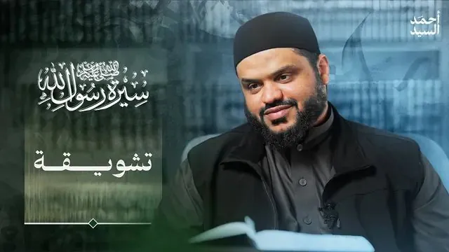
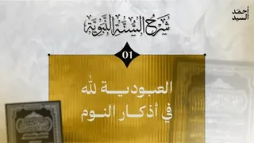
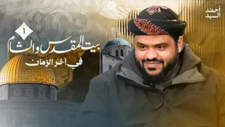
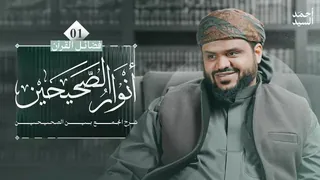

30 محاضرة
سلسلة مرئية
سيرة رسول الله ﷺ
آخر تحديث 27 يونيو 2026

30 محاضرة

شاهد السلسلة على يوتيوب
الحلقات
30 حلقة
سيرة رسول الله ﷺ 03 | مولد النبي ﷺ
04
سيرة رسول الله ﷺ 04 | نظام الجاهلية
05
سيرة رسول الله ﷺ 05 | بعثة النبي ﷺ عند سن الأربعين
06
سيرة رسول الله ﷺ 06 | تثبيت خديجة للنبي ﷺ
07
سيرة رسول الله ﷺ 07 | العلم بالله أول دروس الوحي
08
سيرة رسول الله ﷺ 08 | "قم فأنذر" بداية الدعوة النبوية
09
سيرة رسول الله ﷺ 09 | الرعيل الأول من الصحابة
10
سيرة رسول الله ﷺ 10 | المهاجرات الأول والسابقات إلى الإسلام
11
سيرة رسول الله ﷺ 11 | التربية الأمنيّة في السيرة النبوية
12
سيرة رسول الله ﷺ 12 | السور القرآنية الأولى ومضامين الرسالة
13
سيرة رسول الله ﷺ 13 | المفاوضات الأولى لوأد الدعوة النبوية
14
سيرة رسول الله ﷺ 14 | كيف غيّر الإسلام أسماء العرب؟
15
سيرة رسول الله ﷺ 15 | كيف استحق أبو بكر مكانته في الإسلام؟
16
سيرة رسول الله ﷺ 16 | أنواع الأذى التي تعرض لها النبي ﷺ
17
سيرة رسول الله ﷺ 17 | علاقة القرآن بالسيرة النبوية وأهمية معرفة أسباب النزول
18
سيرة رسول الله ﷺ 18 | كيف صبر الصحابة على تعذيب المشركين؟
19
سيرة رسول الله ﷺ 19 | المهاجرون إلى الحبشة
20
سيرة رسول الله ﷺ 20 | قيادة جعفر لمهاجري الحبشة وأثر التربية النبوية في ثباتهم
21
سيرة رسول الله ﷺ 21 | فقه الهجرة
22
سيرة رسول الله ﷺ 22 | التعريف بمهاجري الحبشة وسيرهم ووفياتهم
23
سيرة رسول الله ﷺ 23 | خلاصة الستة أعوام الأولى من السيرة النبوية
24
سيرة رسول الله ﷺ 24 | لماذا دعا النبي ﷺ بإسلام عمر؟
25
سيرة رسول الله ﷺ 25 | آثار إسلام عمر
26
سيرة رسول الله ﷺ 26 | الحصار الاقتصادي والأمني للنبي ﷺ وبني هاشم والمطلب
27
سيرة رسول الله ﷺ 27 | تتمة تراجم السابقين من مهاجري الحبشة (غير البدريين)
28
سيرة رسول الله ﷺ 28 | فهم السيرة النبوية من سورة الأنعام
29
سيرة رسول الله ﷺ 29 | الدروس المستفادة من نزول سورة "عبس"
30

عرض جميع الحلقات (30)
تابع المشاهدة
سلاسل أخرى
شرح السنة النبوية
8 محاضرات · 4 مايو 2026

الشام وبيت المقدس في آخر الزمان
12 محاضرة · 28 أبريل 2026

أنوار الصحيحين | كتاب فضائل القرآن | شرح الجمع بين الصحيحين
15 محاضرة · 21 فبراير 2026
